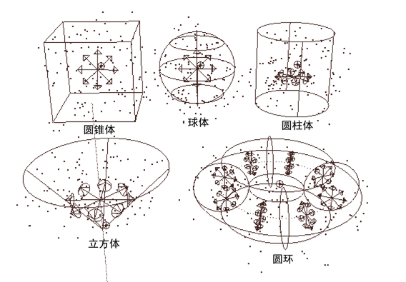

在模拟中使用发射器生成移动或静态的粒子。可以使用发射器创建烟、火、焰火、雨和类似对象。
可以设置发射器选项以控制发射粒子的初始位置、方向、数量和速度。请参见创建发射器选项。在创建发射器之前选择 nParticle 类型，方法是从“FX”菜单集中选择。创建任何类型的发射器时，都会向模拟添加三个对象：发射器、nParticle 对象和 Nucleus 解算器节点。nParticle 对象会自动连接到发射器。
如果发射器已经具有一些其他控制其平移属性的技术，则不能将该发射器添加到对象中。在将发射器添加到对象中后，无法使用其他技术（如表达式）控制该发射器的平移属性。
从一个位置发射 nParticle
您可以创建点发射器（方向和泛向），从场景中的任何位置发射粒子。
- 确保未选择任何对象。
- 选择
 。
。
- 在“发射器选项”(Emitter Options)窗口中，设定所需的粒子发射设置，然后单击“创建”(Create)。
定位器会指示发射器的位置。您可以选择发射器对象并对其进行定位，从而在场景中的任意位置发射粒子。
从对象的曲面发射 nParticle
您可以从选定多边形或 NURBS 对象的曲面发射粒子。
- 选择多边形或 NURBS 对象。
- 选择 >
 。
。
- 在“基本发射器属性”(Basic Emitter Attributes)下，选择“发射器类型”(Emitter type)：
- “表面”(Surface)从 NURBS 或者多边形曲面上的或其附近的随机分布位置发射粒子。
- “泛向”(Omni)或“方向”(Directional)从选定对象的所有顶点或 CV 发射粒子。
- 设定所需的任何其他粒子发射设置，然后单击“创建”(Create)。
有关从整个曲面均匀地发射的详细信息，请参见从 NURBS 曲面均匀发射 nParticle。
从选定顶点、CV 或编辑点发射 nParticle
- 选择多边形或 NURBS 对象。
- 单击
 （“按组件类型选择”(Select by Component Type)图标）。
（“按组件类型选择”(Select by Component Type)图标）。
- 选择要发射粒子的组件。
- 选择 > 。
- 在“基本发射器属性”(Basic Emitter Attributes)下，从“发射器类型”(Emitter type)列表中选择“泛向”(Omni)或“方向”(Directional)。
- 设定所需的任何其他粒子发射设置，然后单击“创建”(Create)。
将发射器添加到组件中会创建一组为该发射器命名的组件。您可以通过编辑集成员身份更改发射的组件。请注意，无法从被引用场景中的对象的组件发射。
提示： 利用 MEL emit 命令，可以将粒子添加到现有粒子对象的选定位置中，而无需创建发射器。可以为创建的粒子的任何每粒子属性设定值。这使您可以创建类似发射的效果，但具有更多的控制。例如，可以使发射的粒子使用发射粒子的属性值。也可以在表达式中使用 emit 命令使粒子在粒子消亡点发射。
有关 emit 命令的详细示例，请参见联机“MEL 命令参考”。
从体积形状发射 nParticle
体积发射器从闭合体积中发射 nParticle。可以从立方体、球体、圆柱体、圆锥体和圆环中进行选择。
- 选择 > 。
- 在“基本发射器属性”(Basic Emitter Attributes)下，将“发射器类型”(Emitter type)设置为“体积”(Volume)。
- 在“体积发射器属性”(Volume Emitter Attributes)下，单击“体积形状”(Volume shape)，然后从菜单中选择一个形状。

- 根据需要设置“体积发射器属性”(Volume Emitter Attributes)，然后单击“创建”(Create)。
体积发射器的隐式形状将显示在屏幕上。可以移动、旋转、缩放或斜切发射器。
注： 无法使体积变形或使用任意体积。
隐藏体积发射器的形状
- 选择发射器，然后选择“显示 > 隐藏 > 隐藏当前选择”(Display > Hide > Hide Selection)。
从曲线上的点发射 nParticle
- 选择曲线。
- 选择 > 。
- 在“基本发射器属性”(Basic Emitter Attributes)下，将“发射器类型”(Emitter type)设置为“曲线”(Curve)。
- 设定所需的任何其他粒子发射设置，然后单击“创建”(Create)。
隐藏发射器对象定位器
- 在工作区中，选择发射器图标。
有时，在“大纲视图”(Outliner)中更容易选择发射器。如果从对象而不是位置发射，则在“大纲视图”(Outliner)中，发射器缩进在对象名称下。
- 选择“显示 > 隐藏 > 隐藏当前选择”(Display > Hide > Hide Selection)。
- 若要再次显示图标，请选择“显示 > 显示 > 显示上次隐藏的项目”(Display > Show > Show Last Hidden)。